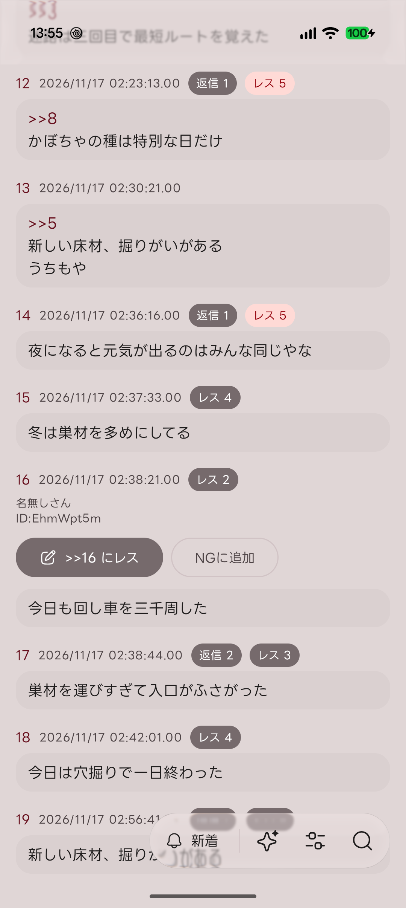

Gemini Nano
分割要約と参照レス付き Q&A
長いスレを範囲ごとに区切って流れを要約。気になる点があればシート内でそのまま質問でき、根拠となるレス番号（>>12 など）へのリンク付きで答えます。
最新の Material 3 とガラスの質感で仕立てた汎用 DAT ビューワー。お好みの掲示板を登録して軽快に読み書きでき、対応端末では Gemini Nano が端末内でスレを要約します。

READING EXPERIENCE
余計な装飾を引いて、専ブラらしい情報密度と読みやすさを両立しました。スレ選択・レス表示・設定の3画面だけで迷わず使えます。
レス表示 — タップで詳細・返信を展開。下部のガラス風ピルから新着・絞り込み・検索へ
ON-DEVICE AI
Gemini Nano（Android システムアプリ AICore）に対応した端末では、スレの要約・質問・AI ミュート・アプリ内チャットが使えます。本文も質問も外部のサーバーへ送りません。
長いスレを範囲ごとに区切って流れを要約。気になる点があればシート内でそのまま質問でき、根拠となるレス番号（>>12 など）へのリンク付きで答えます。
掲示板の追加手順や設定の場所が分からないときは、アプリ内のジャービルに話しかけるだけ。そのまま該当画面を開くボタンも案内します。
通常の ID・ワッチョイ NG に加えて、指定したルールに合うレスをローカル AI が判定してぼかします。必要なときは長押しで一時解除できます。
AI 機能は Gemini Nano（AICore）が利用できる端末でのみ表示されます。非対応端末では AI の入口を出さず、通常の軽快な DAT ビューワーとして同じ Material 3 体験でお使いいただけます。
MATERIAL 3 & GLASS
既定の Suna をはじめ、Pixel 11 Pro の本体色をモチーフにした配色、Dynamic Color、自由なカスタム色まで。種色のニュアンスを保ったまま美しいコントラストを生成します。
このページの配色をアプリと同じテーマで試す
PRIVACY FIRST
Gerbil は作者のサーバーへデータを一切送信しません。広告・解析・トラッキング SDK は入っておらず、閲覧履歴も下書きもすべて端末の中だけに保存されます。
プライバシーポリシーを読む（日本語 / English）Monazilla/1.00 Gerbil/<版> と正直に名乗り、掲示板側のルールに従います。
Google Play からインストールするか、GitHub Releases の署名済み APK を直接ダウンロードできます。